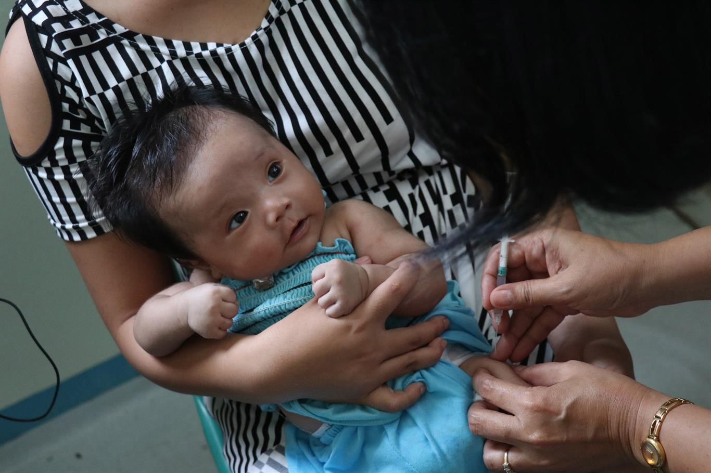

1. Eat a healthy diet
Eat a combination of different foods, including fruit, vegetables, legumes,
nuts and whole grains. Adults should eat at least five portions (400g) of
fruit and vegetables per day. You can improve your intake of fruits and
vegetables by always including veggies in your meal; eating fresh fruit
and vegetables as snacks; eating a variety of fruits and vegetables; and
eating them in season. By eating healthy, you will reduce your risk of
malnutrition and noncommunicable diseases (NCDs) such as diabetes, heart
disease, stroke and cancer.
2. Consume less salt and sugar
...Filipinos consume twice the recommended amount of sodium, putting them at risk of high blood pressure, which in turn increases the risk of heart disease and stroke. Most people get their sodium through salt. Reduce your salt intake to 5g per day, equivalent to about one teaspoon. It’s easier to do this by limiting the amount of salt, soy sauce, fish sauce and other high-sodium condiments when preparing meals; removing salt, seasonings and condiments from your meal table; avoiding salty snacks; and choosing low-sodium products. On the other hand, consuming excessive amounts of sugars increases the risk of tooth decay and unhealthy weight gain. In both adults and children, the intake of free sugars should be reduced to less than 10% of total energy intake. This is equivalent to 50g or about 12 teaspoons for an adult. WHO recommends consuming less than 5% of total energy intake for additional health benefits. You can reduce your sugar intake by limiting the consumption of sugary snacks, candies and sugar-sweetened beverages.
3. Reduce intake of harmful fats
Fats consumed should be less than 30% of your total energy intake. This will help prevent unhealthy weight gain and NCDs. There are different types of fats, but unsaturated fats are preferable over saturated fats and trans-fats. WHO recommends reducing saturated fats to less than 10% of total energy intake; reducing trans-fats to less than 1% of total energy intake; and replacing both saturated fats and trans-fats to unsaturated fats. The preferable unsaturated fats are found in fish, avocado and nuts, and in sunflower, soybean, canola and olive oils; saturated fats are found in fatty meat, butter, palm and coconut oil, cream, cheese, ghee and lard; and trans-fats are found in baked and fried foods, and pre-packaged snacks and foods, such as frozen pizza, cookies, biscuits, and cooking oils and spreads.
4. Avoid harmful use of alcohol
There is no safe level for drinking alcohol. Consuming alcohol can lead to health problems such as mental and behavioural disorders, including alcohol dependence, major NCDs such as liver cirrhosis, some cancers and heart diseases, as well as injuries resulting from violence and road clashes and collisions.
5. Don’t smoke
Smoking tobacco causes NCDs such as lung disease, heart disease and stroke. Tobacco kills not only the direct smokers but even non-smokers through second-hand exposure. Currently, there are around 15.9 million Filipino adults who smoke tobacco but 7 in 10 smokers are interested or plan to quit. If you are currently a smoker, it’s not too late to quit. Once you do, you will experience immediate and long-term health benefits. If you are not a smoker, that’s great! Do not start smoking and fight for your right to breathe tobacco-smoke-free air.

6. Be active
Physical activity is defined as any bodily movement produced by skeletal muscles that requires energy expenditure. This includes exercise and activities undertaken while working, playing, carrying out household chores, travelling, and engaging in recreational pursuits. The amount of physical activity you need depends on your age group but adults aged 18-64 years should do at least 150 minutes of moderate-intensity physical activity throughout the week. Increase moderate-intensity physical activity to 300 minutes per week for additional health benefits.
7. Check your blood pressure regularly
Hypertension, or high blood pressure, is called a “silent killer”. This is because many people who have hypertension may not be aware of the problem as it may not have any symptoms. If left uncontrolled, hypertension can lead to heart, brain, kidney and other diseases. Have your blood pressure checked regularly by a health worker so you know your numbers. If your blood pressure is high, get the advice of a health worker. This is vital in the prevention and control of hypertension.
8. Get tested
Getting yourself tested is an important step in knowing your health status, especially when it comes to HIV, hepatitis B, sexually-transmitted infections (STIs) and tuberculosis (TB). Left untreated, these diseases can lead to serious complications and even death. Knowing your status means you will know how to either continue preventing these diseases or, if you find out that you’re positive, get the care and treatment that you need. Go to a public or private health facility, wherever you are comfortable, to have yourself tested.
9. Get vaccinated
Vaccination is one of the most effective ways to prevent diseases. Vaccines work with your body’s natural defences to build protection against diseases like cervical cancer, cholera, diphtheria, hepatitis B, influenza, measles, mumps, pneumonia, polio, rabies, rubella, tetanus, typhoid, and yellow fever. In the Philippines, free vaccines are provided to children 1 year old and below as part of the Department of Health’s routine immunization programme. If you are an adolescent or adult, you may ask your physician if to check your immunization status or if you want to have yourself vaccinated.
10. Cover your mouth when coughing or sneezing
Diseases such as influenza, pneumonia and tuberculosis are transmitted through the air. When an infected person coughs or sneezes, infectious agents may be passed on to others through airborne droplets. When you feel a cough or sneeze coming on, make sure you have covered your mouth with a face mask or use a tissue then dispose it carefully. If you do not have a tissue close by when you cough or sneeze, cover your mouth as much as possible with the crook (or the inside) of your elbow.
11. Prevent mosquito bites
Mosquitoes are one of the deadliest animals in the world. Diseases like dengue, chikungunya, malaria and lymphatic filariasis are transmitted by mosquitoes and continue to affect Filipinos. You can take simple measures to protect yourself and your loved ones against mosquito-borne diseases. If you’re traveling to an area with known mosquito-borne diseases, consult a physician for a vaccine to prevent diseases such as Japanese encephalitis and yellow fever or if you need to take antimalarial medicines. Wear light-coloured, long-sleeved shirts and pants and use insect repellent. At home, use window and door screens, use bed nets and clean your surroundings weekly to destroy mosquito breeding sites.
12. Drink only safe water
Drinking unsafe water can lead to water-borne diseases such as cholera, diarrhoea, hepatitis A, typhoid and polio. Globally, at least 2 billion people use a drinking water source contaminated with faeces. Check with your water concessionaire and water refilling station to ensure that the water you’re drinking is safe. In a setting where you are unsure of your water source, boil your water for at least one minute. This will destroy harmful organisms in the water. Let it cool naturally before drinking.